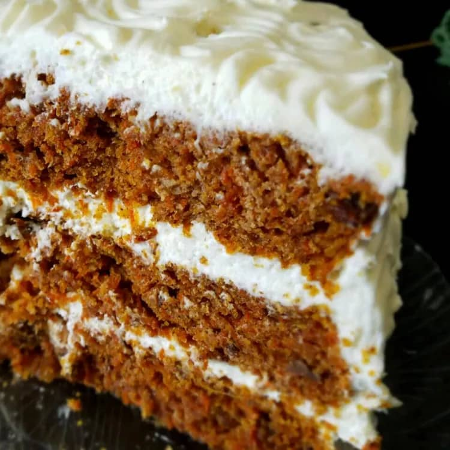

Best Carrot Cake Ever
This is the best carrot cake recipe I have ever made! It's so moist and
flavorful and makes a large quantity of cake. Since I started making it, I
have been hounded to make this cake time and time again. Frost with cream
cheese frosting.

Ingredients
- 6 cups grated carrots
- 1 cup brown sugar
- 1 cup raisins
- 4 eggs
- 1 ½ cups white sugar
- 1 cup vegetable oil
- 2 teaspoons vanilla extract
- 1 cup crushed pineapple, drained
- 3 cups all-purpose flour
- 4 teaspoons ground cinnamon
- 1 ½ teaspoons baking soda
- 1 teaspoon salt
- 1 cup chopped walnuts
Directions
Step 1
Combine grated carrots and brown sugar in a medium bowl.
Let sit for 1 hour, then stir in raisins.
Step 2
Preheat the oven to 350 degrees F (175 degrees C).
Grease and flour two 10-inch round cake pans.
Step 3
Beat eggs in a large bowl until light. Gradually beat in white sugar, oil,
and vanilla. Stir in pineapple. Combine flour, cinnamon,
baking soda, and salt in a separate bowl,
then stir into egg mixture until absorbed.
Stir in carrot mixture and walnuts. Pour evenly into the prepared pans.
Step 4
Bake in the preheated oven until an inserted toothpick comes out clean, 45 to 50 minutes.
Cool for 10 minutes before removing cake layers from the pans; let cool completely.